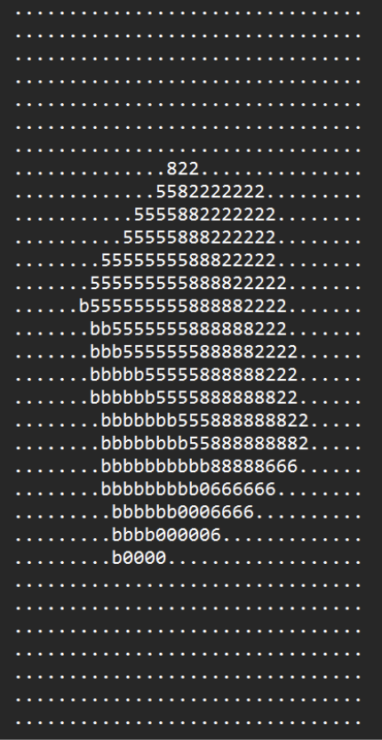
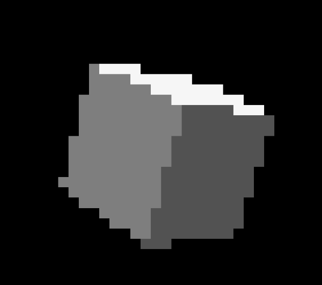

Ray Tracer
The FPGA-based ray tracer was created as part of one of my embedded systems capstone classes and was a project focused on implementing ray tracing on an FPGA with hardware acceleration to see if this would be a feasible and cheaper alternative to high-end dedicated graphics cards. The FPGA board we used was the Terasic DE10-Nano.
To implement the ray tracer, we did the following:
- Created ray tracing C code to act as a baseline and validation method
- Outlined the FPGA implementation by creating four major hardware modules that would implement the ray tracing architecture
- Created SystemVerilog code and validated using data from the initial C code and using Universal Verification Methodology in ModelSim
- Verified the ability to synthesize using Synplify Premier
- Integrate the actual hardware modules onto the FPGA using Intel’s Quartus software

High level block diagram of ray tracer architecture

Raw bitmap output of the ray tracer

Result of render from produced bitmap